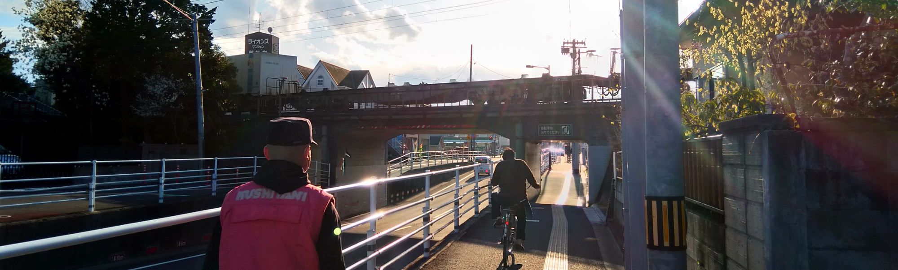

約９年前？GIGGUIDEという地域向けイベントまとめ系サイトが流行ってた覚えがあります。台湾にもありました。GigGuide.twというサイトです（今はもう運営してないですが）。当時まだ学生だった私はよくそれを使って空いてる時間になんか面白いライブがあるのかなのを検索して、ライブをいっぱい見ました。
当時そういう系のサイトはほとんど人手でイベント情報を入力してる印象が残ってます。そうすると、メインテナンスにも割と人力使うし、入力している使用者の音楽趣味によってまとめたイベント情報にも偏りが出ます。
なら、その地域にある全てのライブ会場のイベント情報を自動的に取得し大らかに分析して、仮のDBに一度格納して、人によりそのデータを整理して今度は正式のDBに格納し、使用者は正式のDBからまとめたイベント情報を検索する、という作法はどうでしょうか？
初期化の時parserとか作らないといけないし、仕事の量は結構きついけど、そのあとのメインテナンスは前に比べるとだいぶ楽になるんでしょう？また、自動的に取得するとはいえ、アクセス行為は人間同様に設定されているので、ライブ会場公式サイトのサーバーにも負担かからないのです。
そういう発想から、siopを作ってみました。
今はまだprototypeで、仙台地域ライブハウス情報を全て加入してないですけど、いつかはぜひ完全体のsiopを完成させたいです。
名前の由来はSuede - Europe Is Our Playground。
ライブハウスmacana, hook, darwin, enn2nd/3rdなどのイベント情報を加入。twitter botを作って毎日自動的に今日と明日のイベントまとめを発信。structural optimization などなど。
南河（ちょー）
台湾生まれ、台湾育ち。音楽好き、ライブ好き。明るくて面白くて暴れる踊れるやつが好きだけど、暗くて泣ける鳥肌立つやつもわりと好きです。